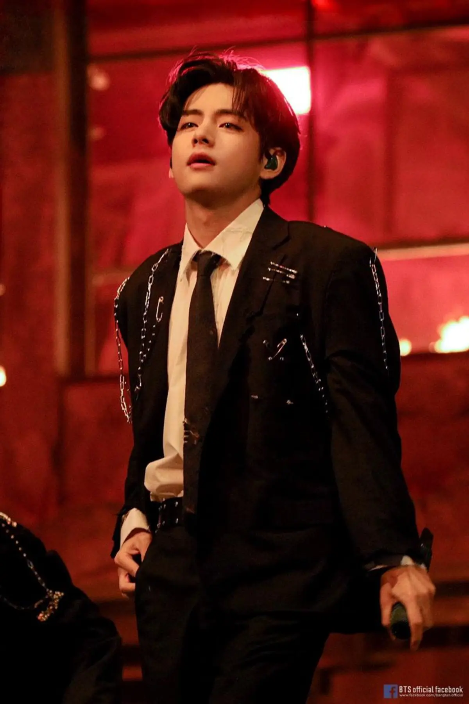

Perjalanan Musik dan Inspirasi
Diposting pada
Perjalanan di dunia musik adalah hal yang sangat **penting** bagi saya dan member BTS. Saya sangat menikmati setiap momen di atas panggung dan bertemu ARMY.
Hal-hal yang Menginspirasi Saya:
- Musik dan Seni
- Melodi yang Indah
- Lukisan dan Fotografi
- Pengalaman Hidup
- Perjalanan Keliling Dunia
- Interaksi dengan Penggemar
Saya juga senang berbagi lagu-lagu rekomendasi, seperti tautan untuk mendengarkan musik favorit saya.
Dan ini adalah gambar yang saya suka:

Sebuah momen yang paling berkesan bagi saya adalah saat melihat lautan cahaya ARMY bomb di konser. Ini adalah hal yang paling berharga bagi saya.
Seperti yang pernah dikatakan oleh RM BTS,Musik adalah jalan pintas untuk berinteraksi dengan orang-orang yang berbeda di seluruh dunia.
Ini adalah kutipan yang sangat menginspirasi saya dalam bermusik dan berhubungan dengan ARMY.
Mengenai V (Kim Taehyung)
- Nama Panggung
- V
- Nama Asli
- Kim Taehyung
- Grup
- BTS